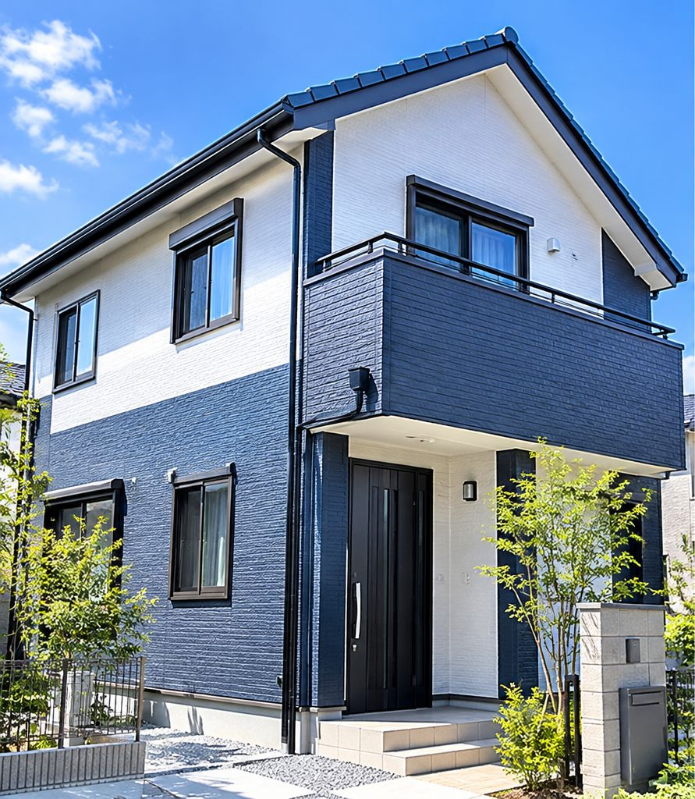

REASON 01職人直営の
職人直営の
各種工事専門店
自社管理の職人が施工するので、下請けへの丸投げはありません。中間マージンがかからず、細部までこだわっても価格を抑えられます。
外壁・屋根の塗り替えから、床のきしみや電球交換のような小さな「困った」まで。自社管理の職人が、中間マージンなしの適正価格でお引き受けします。
営業マンを雇わず、ホームページと口コミのご紹介だけでお仕事をいただいています。
自社管理の職人が施工するので、下請けへの丸投げはありません。中間マージンがかからず、細部までこだわっても価格を抑えられます。

毎日の作業報告と、完了時にお渡しする工事写真で、お留守の間の工事も「隣で見ていた」ようにわかります。

一級国家資格、または経験年数10年以上という条件をクリアした職人にしか、職長として現場を任せません。

工事が終わってからが本当のお付き合いの始まり。保証期間内の不具合は無料で補修いたします。

飛び込み営業をする営業スタッフの人件費がかからないぶん、工事の価格を抑えています。ご依頼は、ホームページと口コミのご紹介からいただいたお客様だけです。
「いくらかかるのかわからない」という不安をなくすため、塗料ごとの単価(1㎡あたり)を載せています。
| 施工場所 | ウレタン | シリコン | フッ素 |
|---|---|---|---|
| 外壁(モルタル・サイディング) | 1,600〜2,200円 | 2,000〜2,700円 | 3,200〜3,800円 |
| 屋根(コロニアル) | 1,800〜3,000円 | 3,000〜4,100円 | 4,000〜5,500円 |
| 雨樋 | 800〜1,200円 | 1,300〜1,700円 | 3,000〜3,900円 |
色あせ・ひび割れ・雨漏りの予防に
葺き替え・カバー工法・板金・漆喰・雨樋・防水まで、屋根まわりの工事もまとめてご相談いただけます。
床のきしみから水まわりまで
クロス・床仕上げ・水まわりリフォーム、型枠工事や解体工事まで、規模を問わず対応します。
世界に1台のオリジナルを
旧車・新車・輸入車・ヘルメットまで。デザインのご相談から一台ずつ丁寧に塗装します。
東久留米市・清瀬市・小平市など、地元のお客様の事例をご紹介します。
掲載イメージです。正式版では施工前後の写真と工事内容を掲載します。
 屋根工事
屋根工事掲載イメージです。正式版では施工前後の写真と工事内容を掲載します。
 リフォーム
リフォーム掲載イメージです。正式版では施工前後の写真と工事内容を掲載します。
お見積り・ご相談は無料です。職人が直接うかがいます。